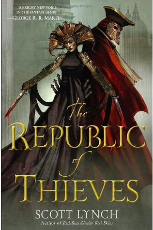

The Republic of Thieves
Estimated time to read: 3 minutes
Author : Scott Lynch
Preceded by : Red Seas Under Red Skies
Succeeded by : The Thorn of Emberlain (Not yet released)
Disclaimer - SPOILER ALERT

If "Red Seas under Red Skies" was a series of waves on a stormy day at sea, "The Republic of Thieves" was nothing short of earthquakes, one after another - some mild tremors, some that make you stand up with a start and a couple that jolt you out of your being and rip apart the very ground you're standing on.
The story starts off where its predecessor stops - with a very ill Locke and an extremely patient Jean (Locke doesn't seem to want to end books in a healthy state). They try to get physiker after physiker to examine and possibly provide Locke an antidote for the poison the Archon left them with, but with consistent failure. When all hope seems lost, they're approached by the one person they'd hoped they'd washed their hands off of - a Bondsmage. Patience, as she called herself, proposed a deal with the last remaining Gentlemen Bastards; an election fixture at Karthain in exchange for Locke's revival to health. With no real options, they begrudgingly find themselves accepting the deal with no real idea of what they were getting themselves into.
In all honesty, I Knew they couldn't Kill off the most interesting protagonist throughout the series with a mere poison, so the introduction of the antidote in this manner was interesting. What Was a let-down though was the manner in which a reunion with their long-lost lady Gentleman Bastard, Sabetha was conducted. She was their rival-to-be in the contest that was the winning of the Election. But this was a minor convenience in the grand scheme of things, so I bemoan it very little. I was left wanting in the previous book, to know more about Sabetha and that was definitely slaked here. Her character despite having received only 33% attention as far as the entire universe (so far) is concerned, has been very fleshed out in this book.
Anyway, the rest of the story is a chain of tricks, alternatingly pulled in turn by Locke (aided ably by Jean) and Sabetha, to try and benefit the respective parties they're trying to help win - Deep Roots and Black Iris respectively. The tricks are crafted skilfully by Scott Lynch, in various degrees of complexity - some are elaborate and some are childishly simple, but they never ceased to amaze me, the reader.
Another thing I loved about the book and something Scott has maintained throughout the trilogy is the seamless shifts between stories of the past and the present. The former is a journey of the Bastards into a theatrical production of a play titled "The Republic of Thieves", which is, if you're paying attention, the title of the book. The play itself, with Aurin, Ferrin and Amadin felt like the foreshadowing of the whole plot, a story within the story, if you will. The latter brings into focus the rivalry between Locke and Sabetha, even as they grapple with their feelings for one other.
And much like how we humans sometimes feel like we're puppets strung along by invisible forces in this vast drama that is life, Locke, Jean, Sabetha, the parties and the people of Karthain are very much controlled by the all-seeing Bondsmagi of Karthain , primarily ruled by 4 main Archmagi - Archedama Patience, Archedon Providence, Archedama Foresight and Archedon Temperance - and these figureheads have an arc and schemes of their own which we're slowly led through, the reasons divulged towards the end.
There are a lot of minor characters introduced in this book, but they serve their purpose as pawns in schemes and they serve it well - nothing more, nothing less. The presence of the Sanza twins, even as characters in flashbacks, was regaling.
The Thorn of Camorr and his Bastard brothers have provided me with a lot of joy and I've savored every bit of the story thus far. I look forward to some questions in my mind being answered with the next and possibly final instalment in the series - "The Thorn of Emberlain".
PS - Look out for the metaphors. Scott loves metaphors.
Subjective Rating: 4.5/5.0.